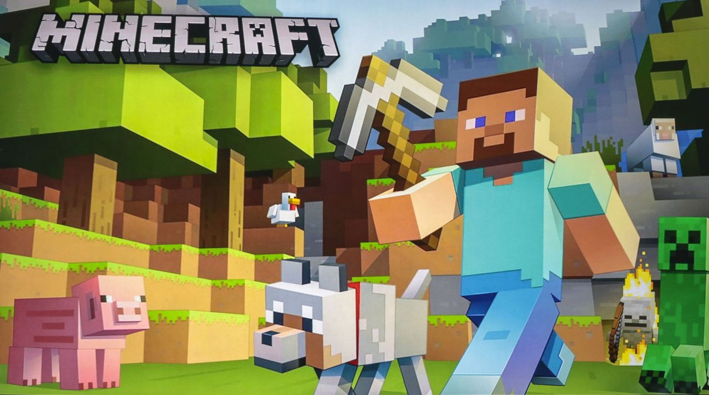

What is Minecraft?
Minecraft is a free-form sandbox game that was very simple in the beginning but as things moved on it gained traction; soon enough by 2011 Minecraft had eleven million players. Minecraft continued to grow at an unbelievable pace and surely enoough six years later reaching 100 million players. Minecraft started as a simple sandbox where you were free to build and explore with no risk or difficulty but soon enough that would change with the release of survival mode. Survival mode allowed combat and risk where you have collect materials and survive and if the unfortunate happens and you die you lose your items. As things progressed the option for multiplayer opened up and people had the opotion to fight or work together. What brought the most attetion to minecraft were the servers where people took the time and effort to programming and building game modes other then survival and creative.
The Worlds
- Overworld
- Nether
- The end
There are three worlds in Minecraft the first world is known as the Overworld where you spawn and collect your materials to be protected and prepared to move on and conquor the worlds. The next world is the Nether which is esentially a world full of lava and trechurous creatures and difficulties that can end someones life if a wrong step is taken. The final world is The End where the goal is to kill the final boss and return to your world and there are only two ways to return to the overworld; death and losing all your items or killing the final boss and going through a portal to your home world comppleting the game.